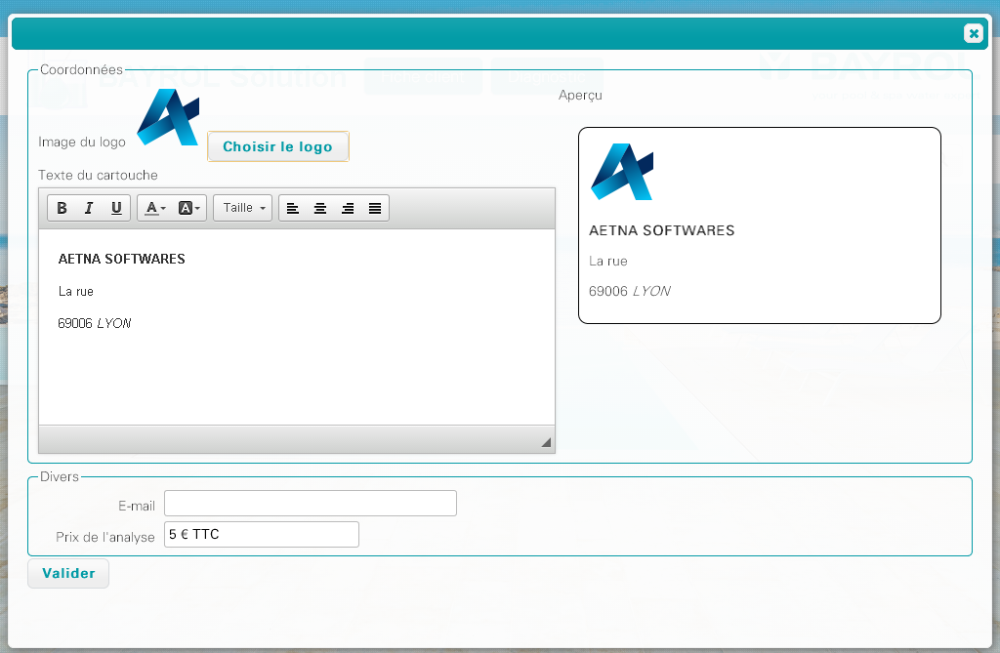
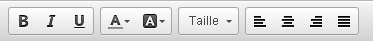

Cet écran est accessible à partir du menu Outils > Configuration
Il est possible de personnaliser les rapports de diagnostic avec les informations de votre société.
Logo: cliquer sur le bouton "choisir le logo" pour importer votre logo dans l'application. Une boîte de dialogue va s'afficher; indiquer le chemin vers le fichier image au format JPEG ou PNG (dimensions recommandées: 350 x 200).
Texte du cartouche: les informations concernant la société sont à saisir dans ce bloc. Il est possible de mettre en forme le texte grâce à la barre d'outils, à la manière d'un traitement de texte:

Le résultat est affiché dans le cadre Aperçu à droite, permettant de voir immédiatement les modifications apportées.
Le champ E-mail permet de renseigner l'adresse e-mail du revendeur. Cette information sera affichée dans les rapports de diagnostics envoyés au client, ce qui lui permettra d'y répondre directement.
Le prix de l'analyse peut également être renseigné.
Une fois les modifications terminées, cliquer sur Valider pour les enregistrer.